Đèn và bóng đổ 3D
Giới thiệu
Nguồn sáng phát ra ánh sáng hòa trộn với material và tạo ra kết quả nhìn thấy được. Ánh sáng trong một scene có thể đến từ nhiều loại nguồn:
Từ chính material, dưới dạng màu phát sáng (emission) (dù nó không ảnh hưởng đến các vật thể lân cận trừ khi được bake hoặc bật chiếu sáng gián tiếp screen-space).
Các node đèn: DirectionalLight3D, OmniLight3D, SpotLight3D và AreaLight3D.
Ánh sáng môi trường trong Environment hoặc Reflection probe.
Chiếu sáng toàn cục (LightmapGI, VoxelGI hoặc SDFGI).
Màu phát sáng là một thuộc tính của material. Bạn có thể đọc thêm về nó trong bài hướng dẫn Standard Material 3D và ORM Material 3D.
Xem thêm
Bạn có thể so sánh các loại đèn khác nhau khi hoạt động bằng dự án demo 3D Lights and Shadows.
Các node đèn
Có bốn loại node đèn: class_DirectionalLight3D, class_OmniLight3D, class_SpotLight3D và class_AreaLight3D. Hãy cùng xem các tham số chung của đèn:
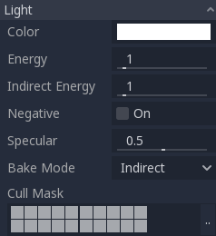
Mỗi thuộc tính có một chức năng cụ thể:
Color: Màu cơ sở của ánh sáng phát ra.
Energy: Hệ số nhân năng lượng. Hữu ích để làm đèn bão hòa hoặc khi làm việc với Chiếu sáng dải tương phản động cao (HDR).
Indirect Energy: Hệ số nhân phụ dùng cho ánh sáng gián tiếp (ánh sáng nảy lại). Thuộc tính này hoạt động với Dùng chiếu sáng toàn cục bằng lightmap, VoxelGI hoặc SDFGI.
Volumetric Fog Energy: Hệ số nhân phụ dùng cho sương mù thể tích. Chỉ có tác dụng khi sương mù thể tích được bật.
Negative: Ánh sáng trở thành trừ đi thay vì cộng thêm. Đôi khi hữu ích để bù thủ công cho một số góc tối.
Specular: Ảnh hưởng đến cường độ của đốm phản xạ specular trên các vật thể chịu tác động của đèn này. Ở giá trị 0, đèn này trở thành đèn khuếch tán thuần túy.
Bake Mode: Đặt chế độ bake cho đèn. Xem Dùng chiếu sáng toàn cục bằng lightmap.
Cull Mask: Các vật thể nằm trong các layer được chọn bên dưới sẽ chịu tác động của đèn này. Lưu ý rằng các vật thể bị loại trừ qua cull mask này vẫn đổ bóng. Nếu bạn không muốn các vật thể bị loại trừ đổ bóng, hãy điều chỉnh thuộc tính Cast Shadow trên GeometryInstance3D thành giá trị mong muốn.
Xem thêm
Xem Đơn vị vật lý cho ánh sáng và camera nếu bạn muốn dùng đơn vị thực tế để cấu hình cường độ và nhiệt độ màu của đèn.
Giới hạn số lượng đèn
Khi dùng renderer Forward+, Godot dùng phương pháp clustering cho chiếu sáng thời gian thực. Có thể thêm bao nhiêu đèn tùy ý (miễn là hiệu năng cho phép). Tuy nhiên, vẫn có giới hạn mặc định là 512 phần tử cluster có thể xuất hiện trong khung nhìn camera hiện tại. Một phần tử cluster là một omni light, spot light, area light, decal hoặc reflection probe. Có thể tăng giới hạn này bằng cách điều chỉnh Max Clustered Elements trong Project Settings > Rendering > Limits > Cluster Builder.
Khi dùng renderer Mobile, có giới hạn 8 OmniLight + 8 SpotLight cho mỗi resource mesh. Ngoài ra còn có giới hạn 256 OmniLight + 256 SpotLight có thể được kết xuất trong khung nhìn camera hiện tại. Hiện chưa thể thay đổi các giới hạn này.
Khi dùng renderer Compatibility, có thể kết xuất tối đa 8 OmniLight + 8 SpotLight cho mỗi resource mesh. Có thể tăng giới hạn này trong Project Settings nâng cao bằng cách điều chỉnh Max Renderable Elements và/hoặc Max Lights per Object trong Rendering > Limits > OpenGL, đổi lại hiệu năng giảm và thời gian biên dịch shader lâu hơn. Cũng có thể giảm giới hạn này để rút ngắn thời gian biên dịch shader và cải thiện hiệu năng đôi chút.
Với mọi phương pháp kết xuất, có thể hiển thị tối đa 8 DirectionalLight cùng lúc. Tuy nhiên, mỗi DirectionalLight bổ sung có bật bóng đổ sẽ làm giảm độ phân giải bóng đổ hiệu dụng của từng DirectionalLight. Đó là vì atlas bóng đổ định hướng được dùng chung giữa tất cả các đèn.
Nếu vượt quá giới hạn kết xuất, đèn sẽ bắt đầu lúc hiện lúc mất khi camera di chuyển, điều này có thể gây mất tập trung. Bật Distance Fade trên các node đèn có thể giúp giảm vấn đề này đồng thời cải thiện hiệu năng. Chia mesh thành các phần nhỏ hơn cũng có thể giúp ích, đặc biệt với hình học màn chơi (điều này cũng cải thiện hiệu quả culling).
Nếu bạn cần kết xuất nhiều đèn hơn mức một renderer cho phép, hãy cân nhắc dùng lightmap được bake với chế độ bake của đèn đặt thành Static. Điều này cho phép đèn được bake hoàn toàn, giúp chúng kết xuất nhanh hơn nhiều. Bạn cũng có thể dùng material phát sáng với bất kỳ kỹ thuật chiếu sáng toàn cục nào để thay thế cho các node đèn phát sáng trên một vùng rộng.
Shadow mapping
Đèn có thể tùy chọn đổ bóng. Điều này giúp chúng chân thực hơn (ánh sáng không chiếu tới các vùng bị che khuất), nhưng có thể tốn hiệu năng hơn. Có một danh sách các tham số bóng đổ chung, mỗi tham số cũng có một chức năng cụ thể:
Enabled: Đánh dấu để bật shadow mapping cho đèn này.
Opacity: Các vùng bị che khuất được làm tối theo hệ số độ đục này. Theo mặc định, bóng đổ hoàn toàn đục, nhưng có thể thay đổi để bóng đổ của một đèn cụ thể trở nên trong mờ.
Bias: Khi tham số này quá thấp, hiện tượng tự đổ bóng sẽ xảy ra. Khi quá cao, bóng đổ sẽ tách rời khỏi vật đổ bóng. Hãy tinh chỉnh cho phù hợp nhất với bạn.
Normal Bias: Khi tham số này quá thấp, hiện tượng tự đổ bóng sẽ xảy ra. Khi quá cao, bóng đổ sẽ trông lệch khỏi vật đổ bóng. Hãy tinh chỉnh cho phù hợp nhất với bạn.
Transmittance Bias: Khi tham số này quá thấp, hiện tượng tự đổ bóng sẽ xảy ra trên các material có bật transmittance. Khi quá cao, bóng đổ sẽ không ảnh hưởng nhất quán đến các material có bật transmittance. Hãy tinh chỉnh cho phù hợp nhất với bạn.
Reverse Cull Face: Một số scene hoạt động tốt hơn khi shadow mapping được kết xuất với face culling bị đảo ngược.
Blur: Nhân bán kính làm mờ bóng đổ của đèn này. Thuộc tính này hoạt động với cả shadow mapping truyền thống lẫn bóng đổ contact-hardening (các đèn có Angular Distance hoặc Size lớn hơn
0.0). Giá trị cao hơn cho bóng đổ mềm hơn, đồng thời trông ổn định hơn theo thời gian với các vật thể chuyển động. Nhược điểm của việc tăng độ mờ bóng đổ là nó khiến họa tiết hạt dùng để lọc trở nên dễ thấy hơn. Xem thêm Chế độ lọc bóng.Caster Mask: Chỉ các vật thể trong các layer này mới đổ bóng. Lưu ý rằng mask này không ảnh hưởng đến việc bóng đổ được đổ lên những vật thể nào.
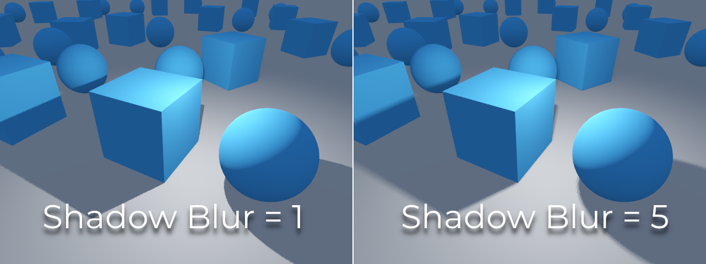
Tinh chỉnh shadow bias
Dưới đây là hình ảnh minh họa việc tinh chỉnh bias. Giá trị mặc định phù hợp với hầu hết trường hợp, nhưng nhìn chung, nó phụ thuộc vào kích thước và độ phức tạp của hình học.
Nếu Shadow Bias hoặc Shadow Normal Bias của một đèn được đặt quá thấp, bóng đổ sẽ bị "nhòe" lên các vật thể. Điều này khiến vẻ ngoài mong muốn của đèn bị tối đi, và được gọi là shadow acne:

Mặt khác, nếu Shadow Bias hoặc Shadow Normal Bias của một đèn được đặt quá cao, bóng đổ có thể trông bị tách rời khỏi vật thể. Hiện tượng này được gọi là peter-panning:
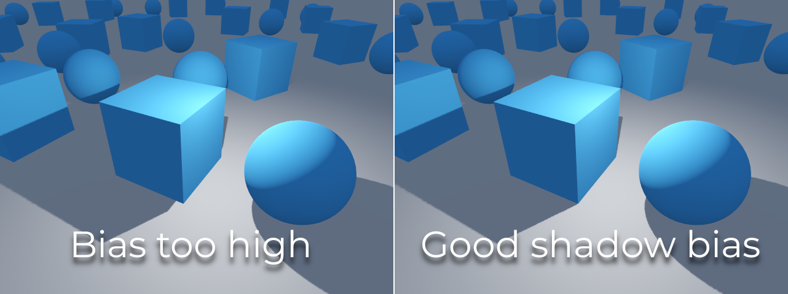
Nói chung, nên ưu tiên tăng Shadow Normal Bias hơn là tăng Shadow Bias. Tăng Shadow Normal Bias không gây peter-panning nhiều như tăng Shadow Bias, nhưng vẫn có thể giải quyết hiệu quả hầu hết các vấn đề shadow acne. Nhược điểm của việc tăng Shadow Normal Bias là nó có thể khiến bóng đổ trông mỏng hơn đối với một số vật thể.
Mọi vấn đề về bias đều có thể khắc phục bằng cách tăng độ phân giải shadow map, đổi lại hiệu năng giảm.
Ghi chú
Tinh chỉnh cài đặt shadow mapping là cả một nghệ thuật – không có cài đặt nào "phù hợp với mọi trường hợp". Để đạt hình ảnh đẹp nhất, bạn có thể cần dùng các giá trị shadow bias khác nhau cho từng đèn.
Lưu ý về thay đổi vẻ ngoài: Khi bật bóng đổ cho một đèn, hãy lưu ý rằng vẻ ngoài của đèn có thể thay đổi so với khi nó được kết xuất không có bóng đổ trong renderer Compatibility. Do hạn chế của các thiết bị di động đời cũ, bóng đổ được triển khai bằng phương pháp kết xuất nhiều lượt (multi-pass), nên các đèn có bóng đổ được kết xuất trong không gian sRGB thay vì không gian tuyến tính. Sự thay đổi không gian kết xuất này đôi khi có thể làm thay đổi đáng kể vẻ ngoài của đèn. Để đạt vẻ ngoài tương tự một đèn không có bóng đổ, bạn có thể cần điều chỉnh cài đặt năng lượng của đèn.
Đèn định hướng
Đây là loại đèn phổ biến nhất và đại diện cho một nguồn sáng ở rất xa (chẳng hạn như mặt trời). Đây cũng là loại đèn tốn ít chi phí tính toán nhất và nên được dùng bất cứ khi nào có thể (dù nó không phải là loại có shadow map rẻ nhất để tính toán, nhưng sẽ nói thêm về điều này sau).
Đèn định hướng (directional light) mô phỏng vô số tia sáng song song bao phủ toàn bộ scene. Node đèn định hướng được biểu diễn bằng một mũi tên lớn chỉ hướng của các tia sáng. Tuy nhiên, vị trí của node hoàn toàn không ảnh hưởng đến chiếu sáng và có thể đặt ở bất kỳ đâu.

Mọi mặt có mặt trước bị tia sáng chiếu vào sẽ được chiếu sáng, còn các mặt khác vẫn tối. Không giống hầu hết các loại đèn khác, đèn định hướng không có tham số riêng nào.
Đèn định hướng cũng cung cấp thuộc tính Angular Distance, xác định kích thước góc của nguồn sáng tính bằng độ. Tăng giá trị này lên trên 0.0 sẽ làm bóng mềm hơn ở khoảng cách xa hơn so với vật thể đổ bóng, đồng thời cũng ảnh hưởng đến hình dạng mặt trời trong các material bầu trời thủ tục (procedural sky). Đây được gọi là bóng contact-hardening (còn được biết đến là PCSS).
Để tham khảo, khoảng cách góc của Mặt Trời nhìn từ Trái Đất xấp xỉ 0.5. Loại bóng này tốn kém, vì vậy hãy xem các khuyến nghị trong Khuyến nghị về PCSS nếu đặt giá trị này trên 0.0 cho các đèn có bật bóng.
Shadow mapping cho đèn định hướng
Để tính shadow map, scene được kết xuất (chỉ độ sâu) từ một góc nhìn trực giao bao phủ toàn bộ scene (hoặc tới khoảng cách tối đa). Tuy nhiên, cách tiếp cận này có một vấn đề: các vật thể ở gần camera nhận bóng có độ phân giải thấp và có thể trông bị vỡ khối.
Để khắc phục điều này, một kỹ thuật có tên Parallel Split Shadow Maps (PSSM) được sử dụng. Kỹ thuật này chia view frustum thành 2 hoặc 4 vùng. Mỗi vùng có shadow map riêng. Điều này cho phép các vùng nhỏ gần người xem có cùng độ phân giải bóng như một vùng rộng lớn ở xa. Khi bật bóng cho DirectionalLight3D, chế độ bóng mặc định là PSSM với 4 phần chia. Trong trường hợp một vật thể đủ lớn để xuất hiện trong cả bốn phần chia, số draw call sẽ tăng lên. Cụ thể, vật thể đó sẽ được kết xuất tổng cộng năm lần: một lần cho mỗi phần chia trong bốn phần chia bóng và một lần cho lần kết xuất scene cuối cùng. Điều này có thể ảnh hưởng đến hiệu năng; hiểu hành vi này là quan trọng để tối ưu scene và kiểm soát kỳ vọng về hiệu năng.

Nhờ vậy, bóng trở nên chi tiết hơn:
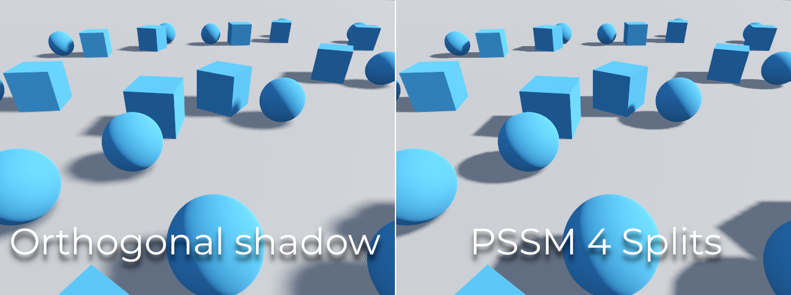
Để điều khiển PSSM, một số tham số được cung cấp:

Mỗi khoảng cách chia được điều khiển tương đối so với mặt phẳng xa của camera (hoặc Max Distance của bóng nếu lớn hơn 0.0). 0.0 là vị trí mắt và 1.0 là nơi bóng kết thúc ở khoảng cách xa. Các phần chia nằm ở giữa. Giá trị mặc định thường hoạt động tốt, nhưng việc tinh chỉnh một chút phần chia đầu tiên là phổ biến để tăng chi tiết cho các vật thể ở gần (như nhân vật trong game góc nhìn thứ ba).
Luôn đảm bảo đặt Max Distance của bóng theo nhu cầu của scene. Khoảng cách tối đa thấp hơn sẽ cho bóng đẹp hơn và hiệu năng tốt hơn, vì sẽ có ít vật thể cần được đưa vào quá trình kết xuất bóng hơn. Bạn cũng có thể điều chỉnh Fade Start để kiểm soát mức độ mờ dần của bóng ở khoảng cách xa. Với các scene mà Max Distance bao phủ hoàn toàn scene ở mọi vị trí camera, bạn có thể tăng Fade Start lên 1.0 để ngăn bóng mờ dần ở khoảng cách xa. Không nên làm điều này trong các scene mà Max Distance không bao phủ hoàn toàn scene, vì bóng sẽ trông như bị cắt đột ngột ở khoảng cách xa.
Đôi khi, phần chuyển tiếp giữa một phần chia và phần tiếp theo có thể trông không đẹp. Để khắc phục, có thể bật tùy chọn Blend Splits, tùy chọn này hy sinh chi tiết và hiệu năng để đổi lấy chuyển tiếp mượt hơn:
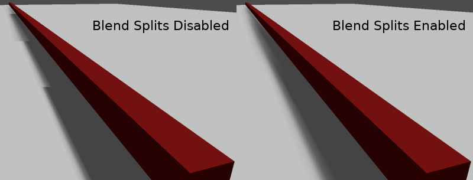
Tham số Shadow > Normal Bias có thể được dùng để khắc phục các trường hợp đặc biệt của hiện tượng tự đổ bóng khi vật thể vuông góc với ánh sáng. Nhược điểm duy nhất là nó làm bóng mỏng đi một chút. Trong hầu hết các tình huống, hãy cân nhắc tăng Shadow > Normal Bias trước khi tăng Shadow > Bias.
Cuối cùng, Pancake Size là một thuộc tính có thể điều chỉnh để khắc phục tình trạng mất bóng khi dùng các vật thể lớn có mesh không được chia nhỏ. Chỉ thay đổi giá trị này nếu bạn nhận thấy bóng bị mất mà không liên quan đến các vấn đề về shadow bias.
Đèn omni
Đèn omni là một nguồn sáng điểm phát sáng theo hình cầu ra mọi hướng trong một bán kính nhất định.

Trong thực tế, độ suy giảm ánh sáng là một hàm nghịch đảo, nghĩa là đèn omni không có bán kính. Đây là một vấn đề vì nó có nghĩa là việc tính toán nhiều đèn omni sẽ trở nên rất nặng.
Để giải quyết vấn đề này, tham số Range được đưa vào cùng với một hàm suy giảm.
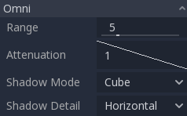
Hai tham số này cho phép tinh chỉnh cách hoạt động về mặt hình ảnh để đạt được kết quả đẹp mắt.

OmniLight3D cũng có tham số Size. Tăng giá trị này sẽ khiến ánh sáng mờ dần chậm hơn và bóng trông mờ hơn khi ở xa vật thể đổ bóng. Điều này có thể dùng để mô phỏng đèn vùng ở một mức độ nào đó. Đây được gọi là bóng contact-hardening (còn được biết đến là PCSS). Loại bóng này tốn kém, vì vậy hãy xem các khuyến nghị trong Khuyến nghị về PCSS nếu đặt giá trị này trên 0.0 cho các đèn có bật bóng.

Shadow mapping cho đèn omni
Shadow mapping cho đèn omni tương đối đơn giản. Vấn đề chính cần cân nhắc là thuật toán dùng để kết xuất nó.
Bóng omni có thể được kết xuất bằng ánh xạ Dual Paraboloid hoặc Cube. Dual Paraboloid kết xuất nhanh nhưng có thể gây biến dạng, còn Cube chính xác hơn nhưng chậm hơn. Mặc định là Cube, nhưng hãy cân nhắc đổi sang Dual Paraboloid cho những đèn mà sự khác biệt về hình ảnh không đáng kể.
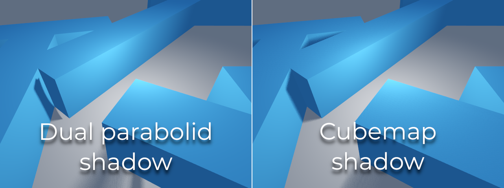
Nếu các vật thể được kết xuất phần lớn có hình dạng bất thường và được chia nhỏ, Dual Paraboloid thường là đủ. Dù sao đi nữa, vì các bóng này được lưu đệm trong một shadow atlas (sẽ nói thêm ở cuối), nó có thể không tạo ra khác biệt về hiệu năng trong hầu hết các scene.
Đèn omni có bật bóng có thể sử dụng projector. Texture projector sẽ nhân màu của ánh sáng với màu tại một điểm nhất định trên texture. Do đó, đèn thường sẽ trông tối hơn khi đã gán texture projector; bạn có thể tăng Energy để bù lại.
Texture projector của đèn omni yêu cầu ánh xạ toàn cảnh 360° đặc biệt, tương tự như texture của class_PanoramaSkyMaterial.
Với texture projector bên dưới, ta thu được kết quả sau:

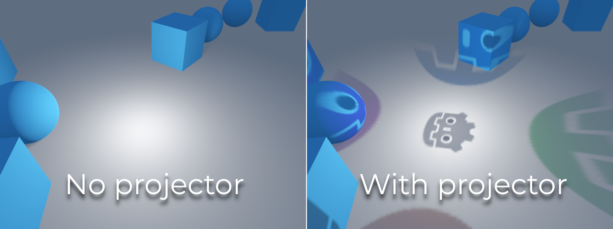
Mẹo
Nếu bạn có projector omni ở dạng ảnh cubemap, bạn có thể dùng công cụ chuyển đổi trên web này để chuyển chúng thành một ảnh toàn cảnh duy nhất.
Đèn spot
Đèn spot tương tự như đèn omni, ngoại trừ việc chúng chỉ phát sáng trong một hình nón (hay "cutoff"). Chúng hữu ích để mô phỏng đèn pin, đèn xe hơi, đèn phản quang, đèn rọi, v.v. Loại đèn này cũng bị suy giảm về phía hướng ngược lại với hướng nó chiếu.
Đèn spot có chung các tham số Range, Attenuation và Size như OmniLight3D, và bổ sung thêm hai tham số:
Angle: Góc mở của đèn.
Angle Attenuation: Độ suy giảm của hình nón, giúp làm mềm viền hình nón.
Shadow mapping cho đèn spot
Đèn spot có cùng các tham số shadow mapping như đèn omni. Kết xuất shadow map của đèn spot nhanh hơn đáng kể so với đèn omni, vì chỉ cần kết xuất một texture bóng (thay vì kết xuất 6 mặt, hoặc 2 mặt ở chế độ dual paraboloid).
Đèn spot có bật bóng có thể sử dụng projector. Texture projector sẽ nhân màu của ánh sáng với màu tại một điểm nhất định trên texture. Do đó, đèn thường sẽ trông tối hơn khi đã gán texture projector; bạn có thể tăng Energy để bù lại.
Không giống projector của đèn omni, texture projector của đèn spot không cần tuân theo định dạng đặc biệt nào để hiển thị đúng. Nó sẽ được ánh xạ theo cách tương tự như một decal.
Với texture projector bên dưới, ta thu được kết quả sau:

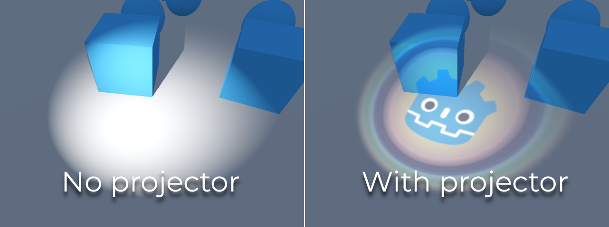
Ghi chú
Đèn spot có góc rộng sẽ có bóng chất lượng thấp hơn so với đèn spot có góc hẹp, vì shadow map bị trải ra trên một bề mặt lớn hơn. Ở góc rộng hơn 89 độ, bóng của đèn spot sẽ ngừng hoạt động hoàn toàn. Nếu bạn cần bóng cho đèn có góc rộng hơn, hãy dùng đèn omni thay thế.
Đèn vùng
Đôi khi, bạn muốn ánh sáng phát ra từ một vùng lớn thay vì một điểm duy nhất. Đèn vùng (area light) hữu ích để mô phỏng ánh sáng khuếch tán mềm, chẳng hạn như ánh sáng chiếu vào từ cửa sổ hoặc từ một bảng quảng cáo được chiếu sáng.
Godot cung cấp node class_AreaLight3D cho mục đích này, node này phát sáng từ một vùng hình chữ nhật. Node chỉ phát sáng và không có biểu diễn hình ảnh nào khác trong scene. Các ảnh chụp màn hình bên dưới dùng một node class_Sprite3D làm node con của đèn vùng để minh họa.
Cảnh báo
Loại đèn này tốn kém nhất để kết xuất theo thời gian thực. Nên dùng nó một cách tiết kiệm, đặc biệt khi bật bóng. Hãy cân nhắc chỉ dùng chúng cho các cảnh cinematic hoặc khi nhắm tới các thiết bị cao cấp.
Trong Forward+, ngay khi có một đèn vùng hiển thị trong view frustum, nó sẽ gây thêm chi phí hiệu năng cho tất cả các vật thể được kết xuất trong scene, kể cả những vật thể không được đèn vùng chiếu tới. Sự đánh đổi này cho phép kết xuất số lượng đèn vùng lớn hơn (clustered lighting).
Trong Mobile và Compatibility, chỉ những vật thể được đèn vùng chiếu tới mới chịu thêm chi phí hiệu năng.
Đèn vùng cũng có thể đổ bóng, với vùng bán dạ (penumbra) thay đổi được mô phỏng bằng PCSS theo mặc định. Kích thước vùng bán dạ này có thể được điều khiển bằng thuộc tính Size của Light3D. Hiệu ứng này có thể khá nặng, vì vậy có thể tắt nó bằng cách đặt Size thành 0.0.
Ghi chú
Bóng do đèn vùng đổ ra có thể trông không chính xác nếu vật thể đổ bóng không được chia nhỏ đủ và ở rất gần đèn vùng. Đây cũng là hạn chế tương tự như chế độ bóng Dual Paraboloid của đèn omni.
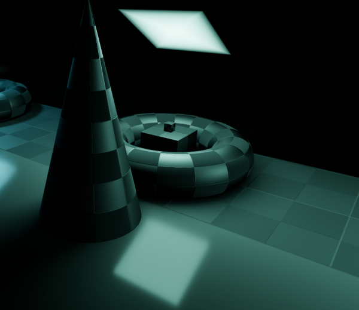
Ghi chú
Vì đèn vùng khó mô phỏng trong một bộ kết xuất raster hóa theo thời gian thực, chúng đi kèm một số hạn chế.
Với các nguồn sáng nhỏ, bạn có thể sẽ đạt kết quả tốt hơn khi dùng đèn điểm. Bóng từ đèn vùng là những phép xấp xỉ thô, vì chúng được tính như thể là đèn điểm, và có thể trông bị méo ở các cạnh. Để có kết quả tốt hơn, hãy đảm bảo các mesh trong phạm vi của đèn được chia nhỏ đầy đủ.
Đèn vùng gặp hiện tượng rò rỉ ánh sáng ở mặt sau của hình học nằm sát phía trước chúng ở các góc tới xiên, vì vậy hãy cẩn thận khi chọn vị trí đặt chúng.
Cuối cùng, không phải mọi tính năng của material đều được hỗ trợ đầy đủ; đèn vùng thực tế chỉ giới hạn ở shading khuếch tán Lambertian và phản chiếu GGX, còn các material dị hướng sẽ trông như đẳng hướng. Vertex shading cũng chưa được triển khai cho đèn vùng.
Đèn vùng phát sáng trong một vùng hình chữ nhật được xác định bởi thuộc tính Area > Size (đừng nhầm với thuộc tính Size chung của Light3D). Để có kết quả chính xác về mặt vật lý, bạn nên đổi kích thước vùng này cho khớp với kích thước của nguồn sáng ngoài đời thực mà bạn đang cố mô phỏng. Ví dụ, nếu bạn mô phỏng một ống đèn neon dài 1 mét và rộng 10 centimet, hãy đặt kích thước vùng là (1, 0.1) và điều chỉnh năng lượng cho phù hợp.
Theo mặc định, năng lượng của đèn được chuẩn hóa: vùng càng lớn, ánh sáng càng yếu. Điều này cho phép bạn thay đổi kích thước vùng mà không cần điều chỉnh năng lượng để bù lại, rất hữu ích cho hoạt ảnh. Bạn có thể tắt hành vi này bằng cách bỏ chọn Area > Normalize Energy nếu muốn năng lượng không phụ thuộc vào kích thước vùng.
Vùng hình chữ nhật có thể được gán texture tùy chọn. Điều này có thể được dùng hiệu quả để thay đổi hình dạng của ánh sáng thành bất kỳ hình 2D nào, hoặc nhuộm nó bằng các màu khác nhau. Kênh alpha của texture được xem như màu đen (không có ánh sáng đi qua). Texture của đèn vùng sẽ hiển thị trong các phản chiếu tùy theo độ nhám của bề mặt. Hành vi này khác với projector của đèn omni/spot, vì nó không chiếu texture trực tiếp lên toàn bộ ánh sáng khuếch tán.
Khi dùng texture trong suốt hoặc đen dần về phía các cạnh, bạn có thể muốn chừa một khoảng trống vài pixel để đảm bảo texture được làm mờ mượt mà.

Ghi chú
Thay đổi texture của đèn vùng khi đang chạy có thể tốn kém, đặc biệt nếu texture lớn.
Để giảm tác động hiệu năng khi chuyển texture lúc đang chạy, hãy đảm bảo mỗi chiều của texture vùng là bội số của 128 pixel hoặc là lũy thừa của hai. Điều này loại bỏ nhu cầu về một lượt co giãn, vốn làm chậm việc thay đổi texture. Texture không nhất thiết phải vuông để đạt tối ưu. Ví dụ về các kích thước texture tối ưu gồm 32×64, 128×128 và 256×384.
Đèn vùng có texture không được hỗ trợ trong bộ kết xuất Compatibility.
Shadow atlas
Không giống đèn định hướng vốn có texture bóng riêng, đèn omni, spot và đèn vùng được gán vào các ô của một shadow atlas. Atlas này có thể được cấu hình trong phần Project Settings nâng cao (Rendering > Lights And Shadows > Positional Shadow).
Độ phân giải áp dụng cho toàn bộ shadow atlas. Atlas này được chia thành bốn góc phần tư:

Mỗi góc phần tư có thể được chia nhỏ để cấp phát số lượng shadow map bất kỳ; sau đây là cách chia mặc định:

Shadow atlas cấp phát không gian như sau:
Kích thước shadow map lớn nhất (khi không chia nhỏ) đại diện cho một đèn có kích thước bằng màn hình (hoặc lớn hơn).
Các phần chia nhỏ (map nhỏ hơn) đại diện cho bóng của những đèn ở xa tầm nhìn hơn và nhỏ hơn tương ứng.
Mỗi frame, quy trình sau được thực hiện cho tất cả các đèn:
Kiểm tra xem đèn có nằm ở ô có kích thước phù hợp không. Nếu không, kết xuất lại nó và chuyển nó sang ô lớn hơn/nhỏ hơn.
Kiểm tra xem có vật thể nào ảnh hưởng đến shadow map đã thay đổi không. Nếu có, kết xuất lại đèn.
Nếu không có điều nào ở trên xảy ra, không làm gì cả và bóng được giữ nguyên.
Nếu các ô trong một góc phần tư đã đầy, các đèn sẽ bị đẩy xuống các ô nhỏ hơn, tùy theo kích thước và khoảng cách. Nếu tất cả các ô trong mọi góc phần tư đều đầy, một số đèn sẽ không thể kết xuất bóng ngay cả khi đã bật bóng cho chúng.
Chiến lược cấp phát bóng mặc định cho phép kết xuất tối đa 88 đèn có bật bóng trong camera frustum (4 + 4 + 16 + 64):
Góc phần tư thứ nhất và chi tiết nhất có thể chứa 4 bóng.
Góc phần tư thứ hai có thể chứa 4 bóng khác.
Góc phần tư thứ ba có thể chứa 16 bóng, với ít chi tiết hơn.
Góc phần tư thứ tư và ít chi tiết nhất có thể chứa 64 bóng, với chi tiết còn ít hơn nữa.
Dùng số lượng bóng lớn hơn cho mỗi góc phần tư cho phép hỗ trợ tổng số đèn có bật bóng nhiều hơn, đồng thời cải thiện hiệu năng (vì bóng sẽ được kết xuất ở độ phân giải thấp hơn cho mỗi đèn). Tuy nhiên, tăng số bóng mỗi góc phần tư sẽ phải trả giá bằng chất lượng bóng thấp hơn.
Trong một số trường hợp, bạn có thể muốn dùng một chiến lược cấp phát khác. Ví dụ, trong một game góc nhìn từ trên xuống mà mọi đèn có kích thước gần như nhau, bạn có thể muốn đặt tất cả các góc phần tư có cùng cách chia để mọi đèn có bóng với mức chất lượng tương đương.
Cân bằng giữa hiệu năng và chất lượng
Kết xuất bóng là một chủ đề then chốt trong hiệu năng kết xuất 3D. Điều quan trọng là đưa ra lựa chọn đúng ở đây để tránh tạo ra các điểm nghẽn.
Các cài đặt chất lượng bóng định hướng có thể được thay đổi khi đang chạy bằng cách gọi các phương thức class_RenderingServer phù hợp.
Các cài đặt chất lượng bóng theo vị trí (omni/spot/vùng) có thể được thay đổi khi đang chạy trên class_Viewport gốc.
Kích thước shadow map
Độ phân giải bóng cao cho bóng sắc nét hơn, nhưng với chi phí hiệu năng đáng kể. Cũng cần lưu ý rằng bóng sắc nét hơn không phải lúc nào cũng chân thực hơn. Trong hầu hết các trường hợp, nên giữ giá trị này ở mặc định 4096 hoặc giảm xuống 2048 cho các GPU cấp thấp.
Nếu bóng theo vị trí trở nên quá mờ sau khi giảm kích thước shadow map, bạn có thể bù lại bằng cách điều chỉnh các góc phần tư của shadow atlas để chứa ít bóng hơn. Điều này cho phép mỗi bóng được kết xuất ở độ phân giải cao hơn.
Chế độ lọc bóng
Bạn có thể chọn một số cài đặt chất lượng shadow map ở đây. Giá trị mặc định Soft Low là sự cân bằng tốt giữa hiệu năng và chất lượng cho các scene có texture chi tiết, vì chi tiết texture sẽ giúp mẫu dithering ít bị chú ý hơn.
Tuy nhiên, trong các dự án có texture ít chi tiết hơn, mẫu dithering của bóng có thể dễ thấy hơn. Để che mẫu này, bạn có thể bật Khử răng cưa theo thời gian (TAA), AMD FidelityFX Super Resolution 2.2 (FSR2), Khử răng cưa xấp xỉ nhanh (FXAA), hoặc tăng chất lượng lọc bóng lên Soft Medium hoặc cao hơn.
Cài đặt Soft Very Low sẽ tự động giảm độ mờ của bóng để làm các lỗi hình ảnh do số mẫu thấp ít bị nhận thấy hơn. Ngược lại, các cài đặt Soft High và Soft Ultra sẽ tự động tăng độ mờ của bóng để tận dụng tốt hơn số mẫu tăng thêm.
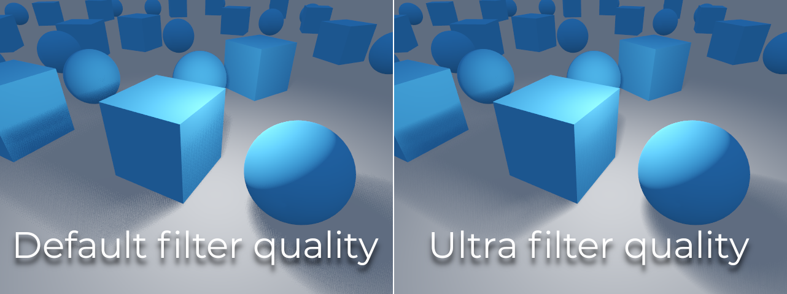
16-bit so với 32-bit
Theo mặc định, Godot dùng texture độ sâu 16-bit để kết xuất shadow map. Điều này được khuyến nghị trong hầu hết các trường hợp vì nó cho hiệu năng tốt hơn mà không có khác biệt đáng kể về chất lượng.
Nếu tắt 16 Bits, texture độ sâu 32-bit sẽ được dùng thay thế. Điều này có thể giảm lỗi hình ảnh trong các scene lớn và với các đèn lớn có bật bóng. Tuy nhiên, khác biệt thường gần như không thấy được, nhưng lại có thể gây chi phí hiệu năng đáng kể.
Mờ dần đèn/bóng theo khoảng cách
OmniLight3D, SpotLight3D và AreaLight3D cung cấp một số thuộc tính để ẩn các đèn ở xa. Điều này có thể cải thiện hiệu năng đáng kể trong các scene lớn có hàng chục đèn trở lên.
Enabled: Điều khiển việc có bật mờ dần theo khoảng cách (một dạng LOD) hay không. Đèn sẽ mờ dần trong khoảng Begin + Length, sau đó nó sẽ bị loại bỏ (cull) và hoàn toàn không được gửi tới shader. Hãy dùng tính năng này để giảm số đèn đang hoạt động trong scene và nhờ đó cải thiện hiệu năng.
Begin: Khoảng cách từ camera mà tại đó đèn bắt đầu mờ dần (tính bằng đơn vị 3D).
Shadow: Khoảng cách từ camera mà tại đó bóng bắt đầu mờ dần (tính bằng đơn vị 3D). Có thể dùng để làm bóng mờ dần sớm hơn so với đèn, giúp cải thiện hiệu năng hơn nữa. Chỉ khả dụng nếu đèn có bật bóng.
Length: Quãng khoảng cách mà trong đó đèn và bóng mờ dần (tính bằng đơn vị 3D). Đèn sẽ dần trở nên trong suốt hơn trong quãng này và hoàn toàn vô hình ở cuối. Giá trị cao hơn cho chuyển tiếp mờ dần mượt hơn, phù hợp hơn khi camera di chuyển nhanh.
Khuyến nghị về PCSS
Percentage-closer soft shadows (PCSS) mang lại diện mạo shadow mapping chân thực hơn, với kích thước vùng bán dạ thay đổi tùy theo khoảng cách giữa vật thể đổ bóng và bề mặt nhận bóng. Điều này đi kèm chi phí hiệu năng cao, đặc biệt với đèn định hướng.
Để tránh các vấn đề về hiệu năng, bạn nên:
Chỉ dùng một vài đèn có bật bóng PCSS tại một thời điểm. Hiệu ứng thường dễ thấy nhất trên các đèn lớn và sáng. Các nguồn sáng phụ mờ hơn thường không được lợi nhiều từ việc dùng bóng PCSS.
Cung cấp một cài đặt để người dùng tắt bóng PCSS. Với đèn định hướng, có thể làm điều này bằng cách đặt thuộc tính
light_angular_distancecủa DirectionalLight3D thành0.0trong script. Với đèn theo vị trí, có thể làm điều này bằng cách đặt thuộc tínhlight_sizecủa OmniLight3D hoặc SpotLight3D thành0.0trong script.
Chế độ lọc projector
Cách kết xuất projector cũng ảnh hưởng đến hiệu năng. Cài đặt dự án nâng cao Rendering > Textures > Light Projectors > Filter cho phép bạn điều khiển cách lọc texture projector. Nearest/Linear không dùng mipmap, giúp kết xuất nhanh hơn. Tuy nhiên, projector sẽ trông bị lấm tấm ở khoảng cách xa. Nearest/Linear Mipmaps sẽ trông mượt hơn ở khoảng cách xa, nhưng projector sẽ trông mờ khi nhìn từ góc xiên. Có thể khắc phục điều này bằng Nearest/Linear Mipmaps Anisotropic, chế độ có chất lượng cao nhất nhưng cũng tốn kém nhất.
Nếu dự án của bạn có phong cách pixel art, hãy cân nhắc đặt bộ lọc thành một trong các giá trị Nearest để projector dùng lọc nearest-neighbor. Nếu không, hãy dùng Linear.